string基础使用
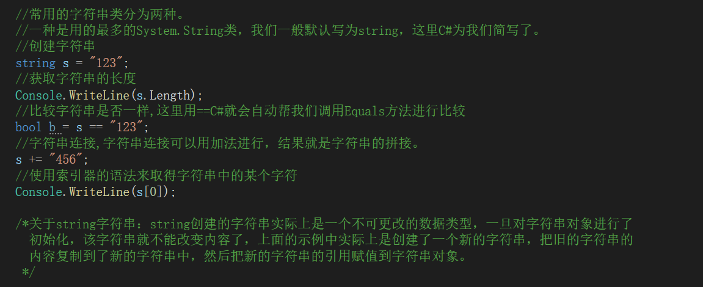string常用方法
| 方法名 | 功能 |
| CompareTo(string) | 逐个字符的去比较字符串是否相同 |
| Replace(string1,string2) | 将str字符串中的string1替换为string2 |
| Split(int1,int2) | 字符串截取,也可以只传入一个参数，如果是一个参数就从参数的位置截取到最后一个字符串的位置，如果是两个就从int1的位置截取int2个字符串 |
| ToLower() | 字符串转小写 |
| ToUpper() | 字符串转大写 |
| Trim() | 去掉字符串两边的空格 |
| CopTo(int1,char,int2,int3) | 截取字符数组，将字符串从int1的位置开始截取，截取到char数组中，char数组从int2的位置开始存储，截取int3个 |
| IndexOf(string) | 返回string在字符串中的索引（第一次出现的位置）,没出现过就是-1 |
| IndexOfAny(char[]) | 返回char数组中任意元素出现在字符串中的下标 |
| Insert(int,string) | 将string插入在字符串下标为int的位置前面 |
常用方法---静态方法
| 方法名 | 说明 |
| Concat(params string[]) | 将多个字符串进行拼接,object也行，最好是用基础数据类型或字符串。否则拼接的就是内存地址 |
| Format(string,params object[]) | 可视化字符串,在string中需要按下表填写占位符，之后会通过object[]对应下表替换占位符,占位符从0开始例如{0} |
| Join(string,char[]) | 将char数组合并成一个字符串，char数组中每个元素通过string分隔，如果不想分隔，就输入空字符串 |
StringBuilder和string相比，StringBuilder是动态对象，可以对StringBuilder的值进行修改，StringBuilder可以理解为一个大的数组
StringBuilder sb=new StringBuilder(string,int);
通过这种方式可以创建一个StringBuilder对象（可以不带参数，也可以只带一个）,string是默认值没有就是空，int是默认数组长度，没有就是最小值，空间不够就会自动增加。
StringBuilder常用方法
| 方法名 | 说明 |
| Append(string) | 添加字符串 |
| Insert(int,string) | 将字符串string插入在int位置 |
| Remove(int1,int2) | 删除int1位置的字符删除int2个 |
| Replace(string1,string2) | 将字符串中的string1替换为string2 |
除了这些方法外，StringBuilder还带有用法和string一样的方法。
//第一个参数是要对比的字符串,第二个参数是正则表达式
//加上@是表示不使用转意字符，原样输出。
Regex.IsMatch("",@"");
//将参数1中复合参数二正则表达式的字符替换为参数三
Regex.Replace("","","");
如果我们要把方法当做参数来传递的话，就要用到委托。简单来说委托是一个类型，这个类型可以赋值一个方法的引用。
我们使用委托的时候，需要经过两个阶段，首先定义委托，告诉编译器我们这个委托可以指向哪些类型的方法，然后，创建该委托的实例。
声明委托: delegate void IntMethodInvoker(int x);
使用委托:
private delegate string GetAString();
static void Main(){
int x = 40;
GetAString firstStringMethod = x.ToString;
Console.WriteLine(firstStringMethod());
}
这里声明的委托返回值类型是void而且是没有参数的，所以只能用于无返回值且没有参数的方法。
反之一样，如果是有参数和有返回值的，那么就只能用于有参数有返回值的，而且是返回值和参数一致的函数
C#也为开发者准备了定义好的委托：Action委托和Func委托
Action委托引用了一个void返回类型的方法，T表示方法参数，先看Action委托有哪些
Action
Action<in T>
Action<in T1,in T2>
Action<in T1,in T2 .... inT16>
Func引用了一个带有一个返回值的方法，它可以传递0或者多到16个参数类型，和一个返回
类型
Func<out TResult>
Func<in T,out TResult>
Func<int T1,inT2,,,,,,in T16,out TResult>
这里的这两个委托都使用了重载机制，有带参和不带参的两种形式，而且参数和返回值类型都是泛型T
案例1
delegate double DoubleOp(double x);
如何用Func表示
Func<double,double>
这里的函数DoubleOp带有一个双精度浮点型的参数和双精度浮点型的返回值，通过Func委托表示时，泛型中的第一个double代表参数，第二个double代表返回值，不管参数有多少最后一个都是代表返回值
多播委托
前面使用的委托都只包含一个方法的调用，但是委托也可以包含多个方法，这种委托叫做多
播委托。使用多播委托就可以按照顺序调用多个方法，多播委托只能得到调用的最后一个方
法的结果，一般我们把多播委托的返回类型声明为void。
Action action1 = Test1;
action2+=Test2;
action2-=Test1;
匿名方法
到目前为止，使用委托，都是先定义一个方法，然后把方法给委托的实例。但还有另外一种 使用委托的方式，不用去定义一个方法，应该说是使用匿名方法（方法没有名字）。
Func<int,int,int> plus = delegate (int a,int b){
int temp = a+b;
return temp;
};
int res = plus(34,34);
Console.WriteLine(res);
在这里相当于直接把要引用的方法直接写在了后面，优点是减少了要编写的代码，减少代码 的复杂性
事件
事件(event)基于委托，为委托提供了一个发布/订阅机制，我们可以说事件是一种具有特殊 签名的委托。
事件的声明
public event 委托类型 事件名;
事件使用event关键词来声明，他的返回类值是一个委托类型。
通常事件的命名，以名字+Event 作为他的名称，在编码中尽量使用规范命名，增 加代码可读性。
为了更加容易理解事件，我们还是以前面的动物的示例来说明，有三只动物，猫(名叫Tom), 还有两只老鼠（Jerry和Jack）,当猫叫的时候，触发事件(CatShout)，然后两只老鼠开始逃 跑(MouseRun)。接下来用代码来实现。(设计模式-观察者模式)
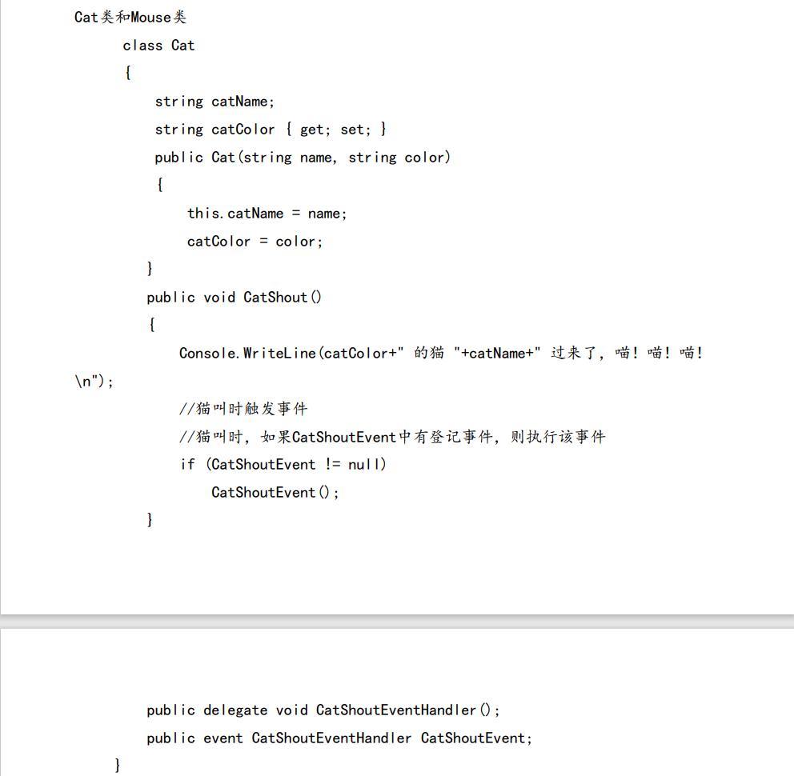在方法的上方加上Obsolete特性修饰，那么这个方法就会变成弃用方法，弃用方法还能使用，但是不推荐使用
被Conditional特性修饰的方法需要有宏才能运行
需要在顶部写入#define 参数名
Conditional中的参数也需要和宏的参数名一样，这样才能运行，如果没有宏就算调用了方法也不会执行.
使用这两个特性时一定要为参数设默认值
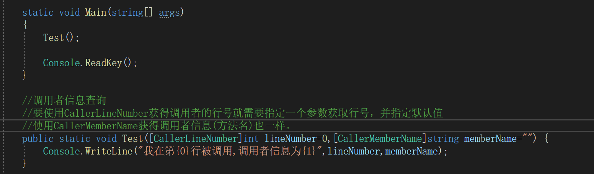调试模式下不执行
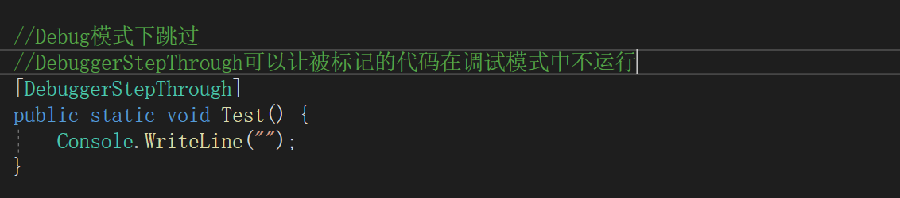定义:定义时要注意命名规范
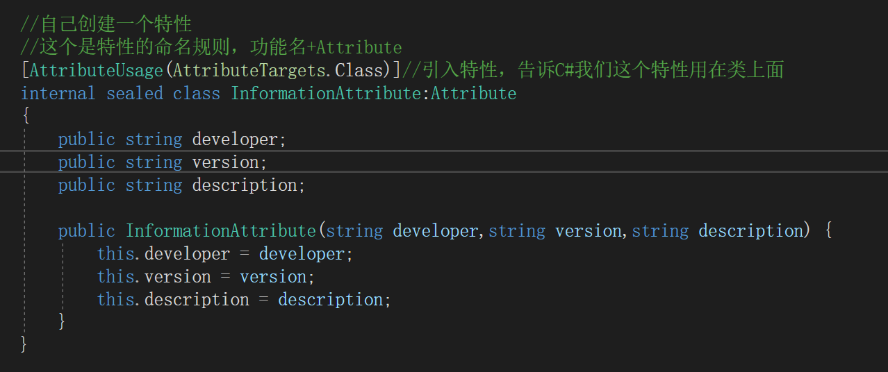使用
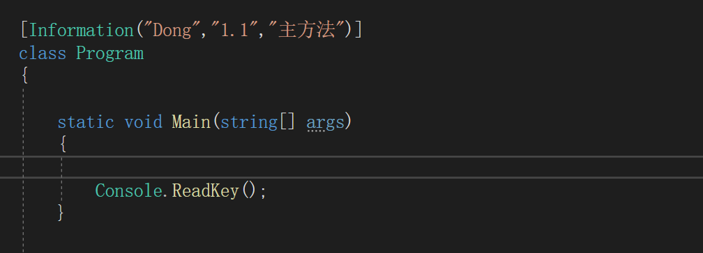这种方式在最新的.net平台上就已经弃用了
正常启动委托的方式，一条线程，会出现堵塞
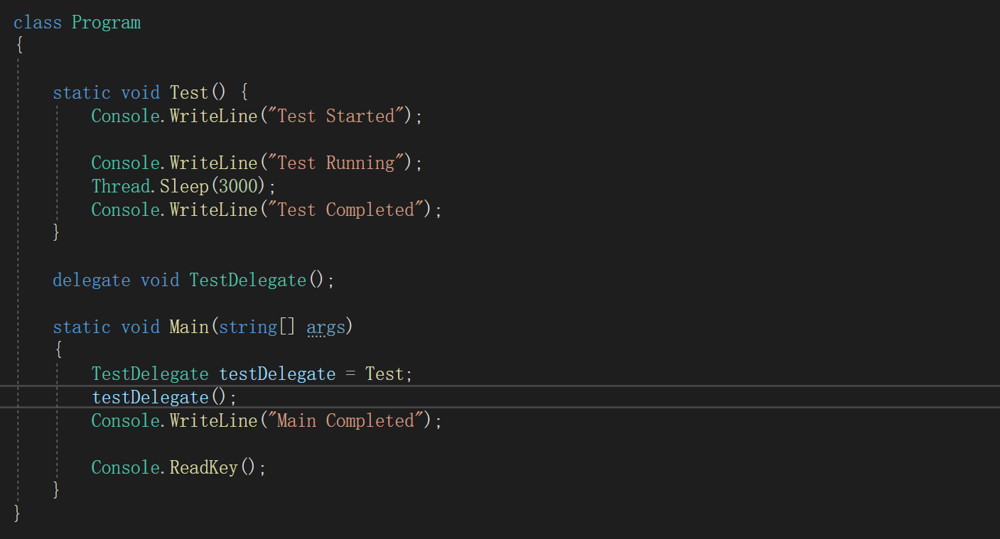通过委托启动线程的方式，两个线程，分开运行
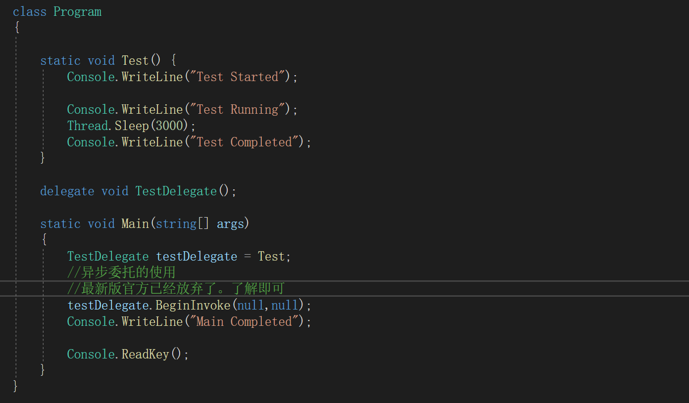创建线程时只需要传入方法名就行。随后通过Start方法启动
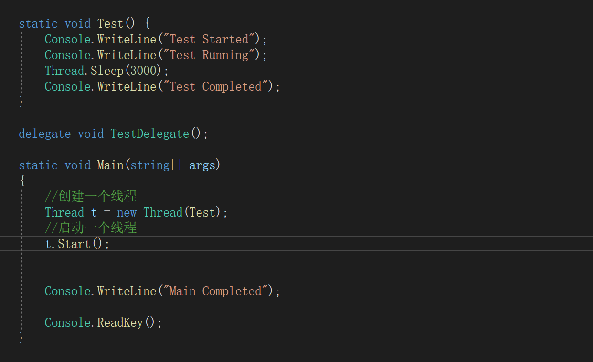通过匿名函数创建线程
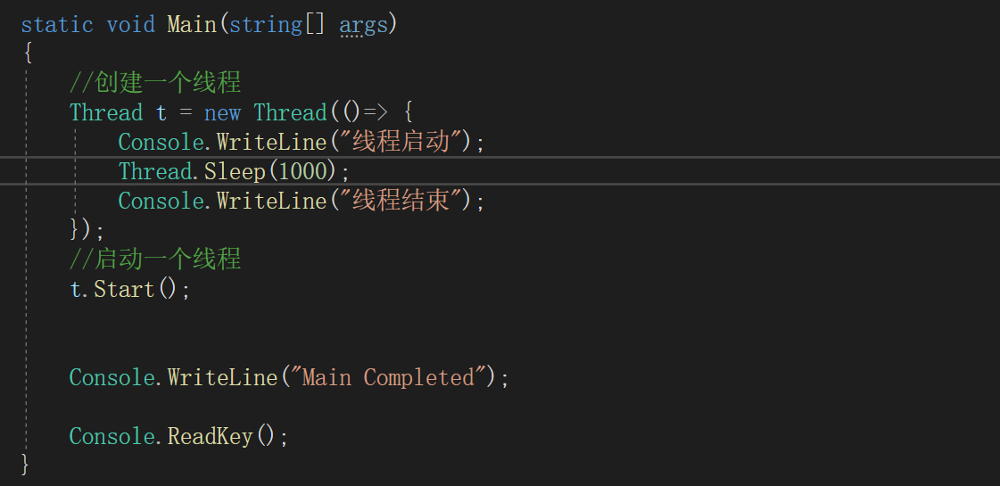Thread.CurrentThread.ManagedThreadId：获取线程id
出现在哪个线程获取的就是哪个线程的id（例如main方法就是主线程id）
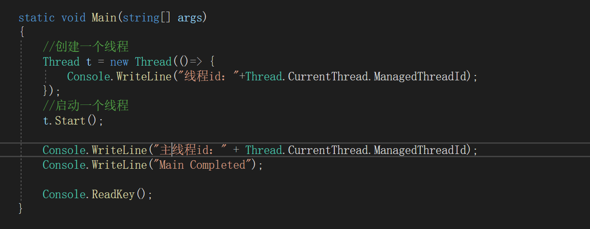需要注意的是线程启东时可以传递参数，但只能传递一个参数，所以如果要启动线程的方法若果有多个参数则需要将参数放在结构体中
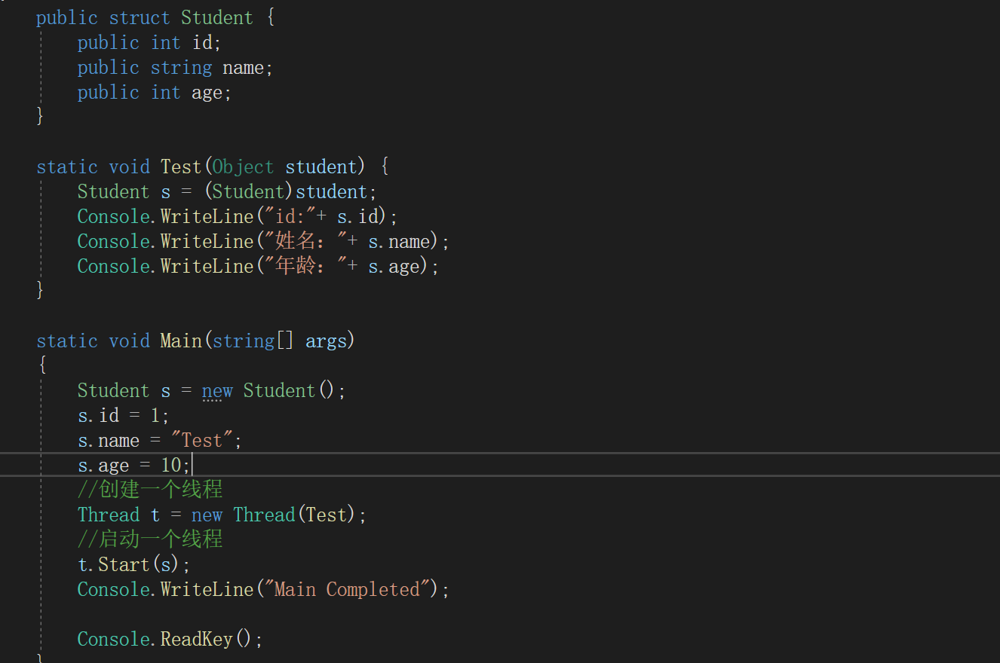上面传递参数的方式只能传递一个参数，或者通过结构体来实现多个参数的传递
如果通过一个独立类的方式去传递参数则可以一次传递多个，还不用结构体
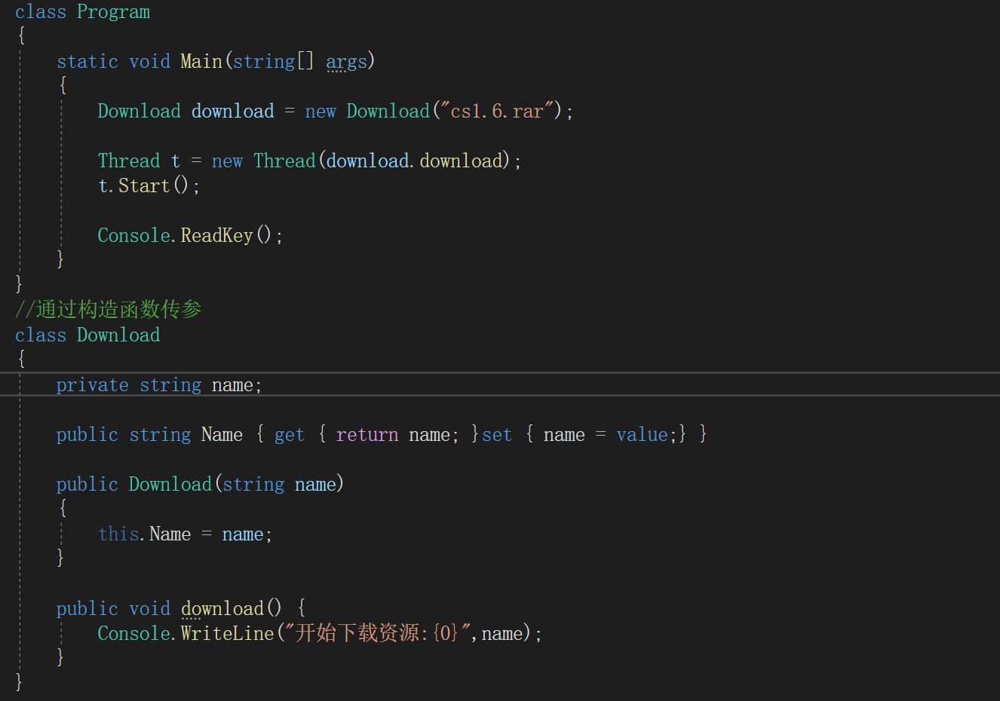只有一个前台线程在运行，应用程序的进程就在运行，如果有多个前台线程在运行，但是Main方法结束了，应用程序的进程仍然是运行的，直到所有的前台线程完成其任务为止。
默认情况下，用Thread类创建的线程是前台线程。线程池中的线程总是后台线程。在用Thread类创建线程的时候，可以设置IsBackground属性，表示它是一个前台线程还是一个后台线程
例如同样是上面的方法，当我们创建线程时将参数IsBackground参数设置为true时，当main方法结束时，线程也会结束，因为它被设置为了后台线程。
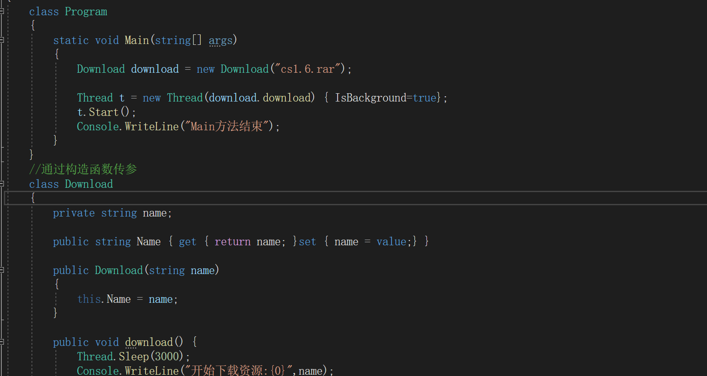线程有操作系统调度，一个CPU同一时间只能做一件事情（运行一个线程中的计算任务）， 当有很多线程需要CPU去执行的时候，线程调度器会根据线程的优先级去判断先去执行哪一 个线程，如果优先级相同的话，就使用一个循环调度规则，逐个执行每个线程。
在Thead类中，可以设置Priority属性，以影响线程的基本优先级 ,Priority属性是一个 ThreadPriority枚举定义的一个值。定义的级别有Highest ,AboveNormal,Normal,BelowNormal 和 Lowest。
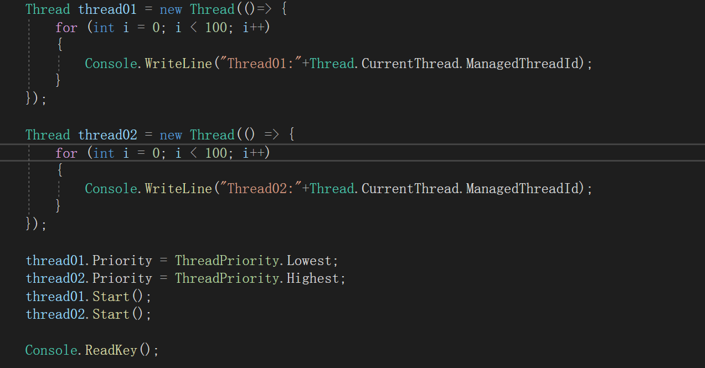1,获取线程的状态（Running还是Unstarted,,,），当我们通过调用Thread对象的Start方 法，可以创建线程，但是调用了Start方法之后，新线程不是马上进入Running状态，而是出 于Unstarted状态，只有当操作系统的线程调度器选择了要运行的线程，这个线程的状态才 会修改为Running状态。我们使用Thread.Sleep()方法可以让当前线程休眠进入WaitSleepJoin状态。
2,使用Thread对象的Abort()方法可以停止线程。调用这个方法，会在终止要终止的线程中 抛出一个ThreadAbortException类型的异常，我们可以try catch这个异常，然后在线程结 束前做一些清理的工作。
3,如果需要等待线程的结束，可以调用Thread对象的Join方法，表示把Thread加入进来，停 止当前线程，并把它设置为WaitSleepJoin状态，直到加入的线程完成为止。
| FileSystemInfo | 这是表示任何文件系统对象的基类 |
| FileInfo和File | 这些类表示文件系统上的文件 |
| DirectoryInfo和Directory | 表示文件系统上的文件夹 |
| Path | 包含用于处理路径名的一些静态方法 |
| DriveInfo | 它的属性和方法提供了指定驱动器的信息 |
我们有两个用于表示文件夹的类和两个用于表示文件的类 Directory（文件夹）和File（文件）类只包含静态方法，不能被实例化。如果只对文件夹 或文件执行一个操作，使用这些类就很有效，省去了去实例化.NET类的系统开销。 DirectoryInfo类和FileInfo类实现与Directory和File相同的公共方法，他们拥有一些公共 属性和构造函数，这些类的成员都不是静态的。需要实例化这些类，之后把每个实例与特定 的文件夹或者文件关联起来。如果使用同一个对象执行多个操作，使用这些类比较合适，这 是因为在构造的时候他们将读取合适文件系统对象的身份验证和其他信息，无论每个对象调 用了多少方法，都不需要再次读取这些信息。
完成一个文件的拷贝
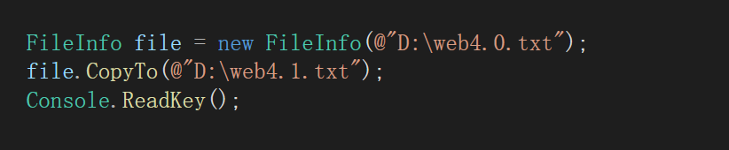这里的@符号代表取消转义字符，将转义字符直接输出。
判断文件夹是否存在，存在就输出文件夹下的所有文件
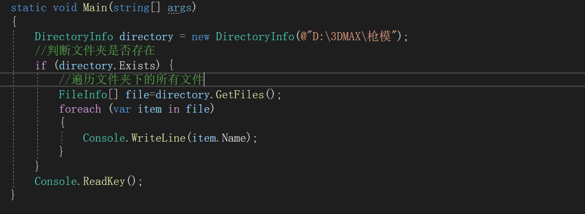FileInfo和DirectoryInfo的对象都可以通过Exists属性判断这个文件或者文件夹是否存 在。
| CreationTime | 创建文件或文件夹的时间 |
| DirectoryName(用于FileInfo) | 包含文件夹的完整路径 |
| Parent(用于DirectoryInfo) | 指定子目录的父目录 |
| Exists | 文件或文件夹是否存在 |
| Extension | 文件的扩展名，对于文件夹，它返回空白 |
| FullName | 文件或文件夹的完整路径名 |
| LastAccessTime | 最后一次访问文件或文件夹的时间 |
| LastWriteTime | 最后一个修改文件或文件夹的时间 |
| Name | 文件或文件夹的名称 |
| Root（仅用于DirectoryInfo） | 路径的根部分 |
| Length（仅用于FileInfo） | 返回文件的大小（以字节为单位） |
| Create() | 创建给定名称的文件夹或者空文件，对于FileInfo,该方法会返回一个流对象，以便于写入文件。 |
| Delete() | 删除文件或文件夹。对于文件夹有一个可以递归的Delete选项 |
| MoveTo() | 移动或重命名文件或文件夹 |
| CopyTo() | (只用于FileInfo)复制文件，文件夹没有复制方法，如果想要复制完整的目录树，需要单独复制每个文件和文件夹 |
| GetDirectories() | (只适用于DirectoryInfo)返回DirectoryInfo对象数组，该数组表示文件夹中包含的所有文件夹 |
| GetFiles() | (只适用于DirectoryInfo)返回FileInfo对象数组，该数组表示文件夹中所有的文件 |
| GetFileSystemInfos() | (只适用于DirectoryInfo)返回FileInfo和DirectoryInfo对象，它把文件夹中包含的所有对象表示为一个FileSystemInfo引用数组 |
小案例：修改文件创建时间
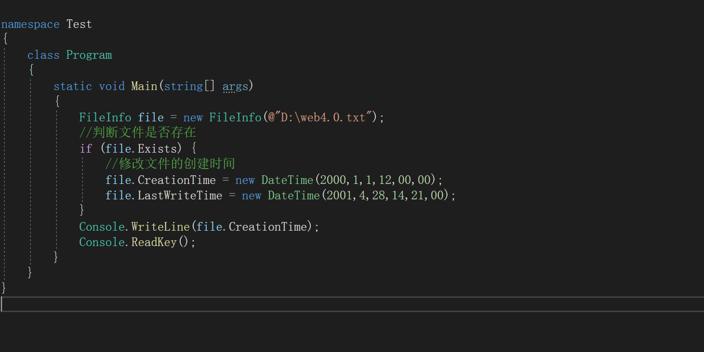我们不能去实例化Path类，Path类提供了一些静态方法，可以更容易的对路径名执行操作。 Console.WriteLine(Path.Combine(@"c:\my documents","Readme.txt"));
在不同的操作系统上，路径的表示是不一样的 windows上是 \ , 在Unix就是/ ,我们可以使 用Path.Combine连接两个路径，不用关心在哪个系统上。
Path类的一些静态字段
| AltDirectorySeparatorChar | 提供分割目录的字符，在windows上使用 \ 在Unix上用 / |
| DirectorySpeparatorChar | 提供分割目录的字符，在windows上使用 / 在Unix上用 \ |
| PathSeparator | 提供一种与平台无关的方式，来指定划分环境变量的路径字符串，默认为分号 |
| VolumeSepartorChar | 提供一种与平台无关的方式，来指定容量分割符，默认为冒号 |
在.NET 2.0扩展了File类，通过File可以读写文件。
读取文件
| File.ReadAllText(FilePath); | 根据文件路径读取文件中所有的文本 |
| File.ReadAllText(FilePath,Encoding); | Encoding可以指定一个编码格式Encoding.ASCII; |
| File.ReadAllBytes(); | 方法可以打开二进制文件把内容读入一个字节数组 |
| File.ReadAllLines(); | 以行的形式读取文件，一行一个字符串，返回一个字符串的数组 |
写入文件
我们读取文件有ReadAllText() ReadAllLines()和ReadAllBytes()这几个方法，对应的写入 文件的方法有WriteAllText() WriteAllLines()和WriteAllBytes()
FileStream(文件流) 这个类用于任意文件（包括二进制文件）中读写。
| FileMode( 打开模式) | Append,Create,CreateNew,Open,OpenOrCreate和Truncate |
| FileAccess(读取还是写入) | Read,ReadWrite和Write |
| FileShare(文件共享设置) | Delete,Inheritable,None,Read,ReadWrite和Write |
小案例：传输文件
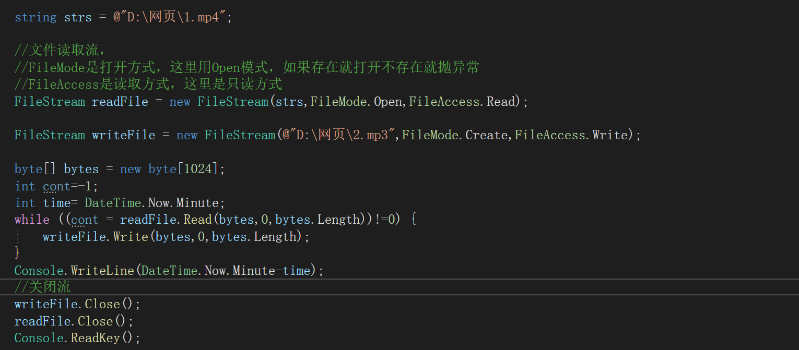这里的流读取时会有一个返回值，通过cont接收，如果返回值为0就代表读取结束，但是如果是通过ReadByte读取一次是一个字节，那么返回的就不是0，如果到了末尾返回-1.
我们对文本文件的读写一般使用StreamReader和StreamWriter,因为不同的文本有不同的编 码格式，这个StreamReader会帮我们自动处理，所以我们不需要关心文本文件的编码是什么
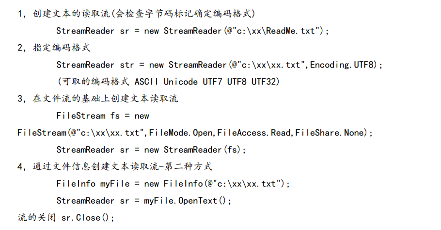 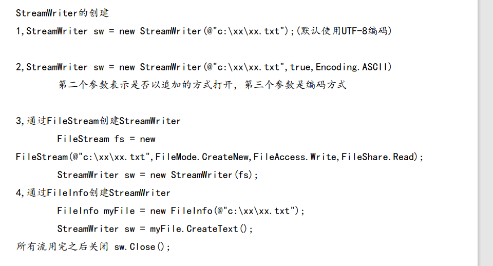它的创建方式很多，用法和之前的流类似，这里就不一一讲述，直接用一个案例来展示
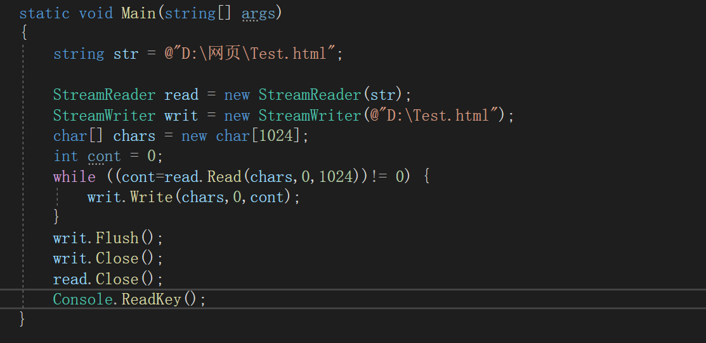XML 指可扩展标记语言
XML 被设计用来传输和存储数据。XML 被设计用来结构化、存储以及传输信息。
xml文档展示
-----------------------------xml文档
<?xml version="1.0" encoding="ISO-8859-1"?>("配置参数")
<note> ("标签名可以任取，但要遵循命名规范")
<to>George("标签的值")</to>
<from>John</from>
<heading>Reminder</heading>
<body>Don't forget the meeting!</body>
</note>
XML的语法和html类似，有投标前就要有尾标签。而且需要区分大小写
通过C#读取XML的数据方法一
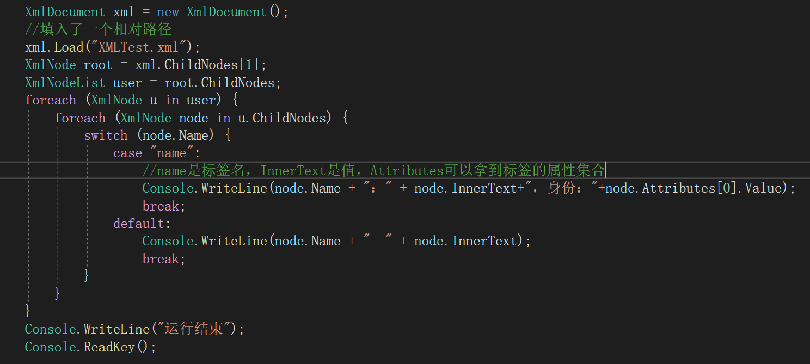ChildNodes获取所有的子标签，Name当前标签的名字，InnerText标签的值，Attributes标签中的所有属性
需要注意的是XML的层级关系,读取的时候也层层进入。
通过C#读取XML的数据方法二
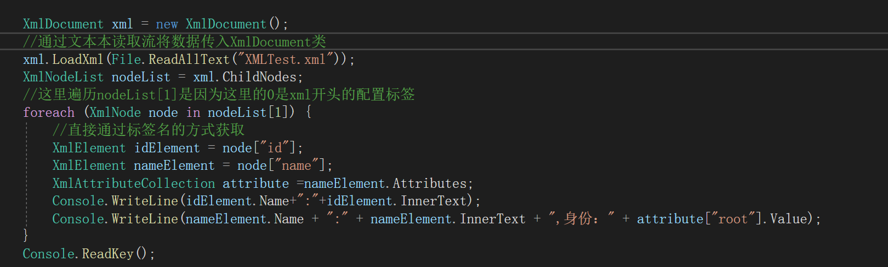JSON是一种用于存储的数据格式，比较简单。
User类
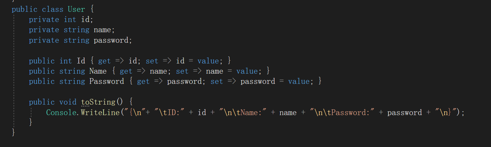C#并不带有解析JSON的类需要额外导入。
这里使用了市面上用的比较多的一个JSON解析类
JSON
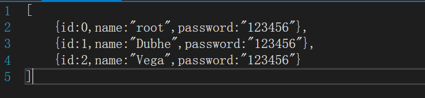反序列化和序列化
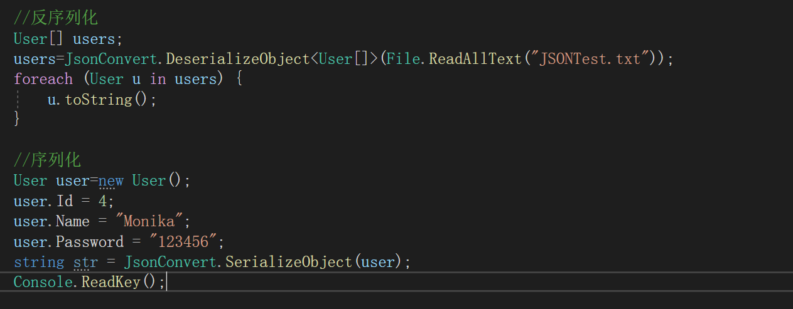这里解析时一定要注意类名和JSON数据中的key保持一致
在C#中，Queue是一种数据结构，用于存储一系列元素并按照先进先出（FIFO）的原则进行访问。它是一个泛型集合类型，可以在任何时候存储任何类型的元素。
Queue是一个可变的集合，这意味着您可以在队列中添加和移除元素。它提供了用于向队列中添加元素的方法（Enqueue），以及用于从队列中移除并返回元素的方法（Dequeue）。此外，您还可以使用Peek方法来查看队列中的第一个元素而不将其从队列中移除。
| 方法名 | 功能 |
| Enqueue(T item) | 在集合中添加一个元素 |
| Dequeue() | 从队列的开头移除并返回元素。 |
| Peek() | 返回队列的第一个元素，但不将其从队列中移除 |
| Count | 返回队列中的元素数量 |
| IsEmpty | 检查队列是否为空 |
| Clear() | 移除队列中的所有元素 |